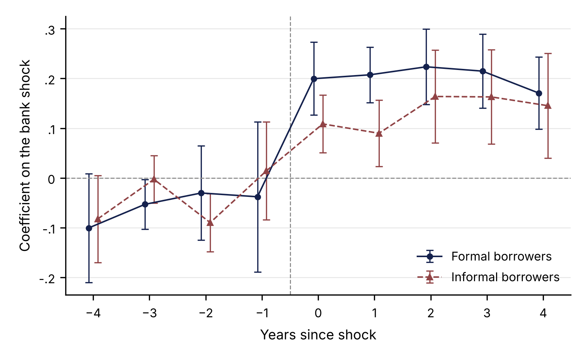
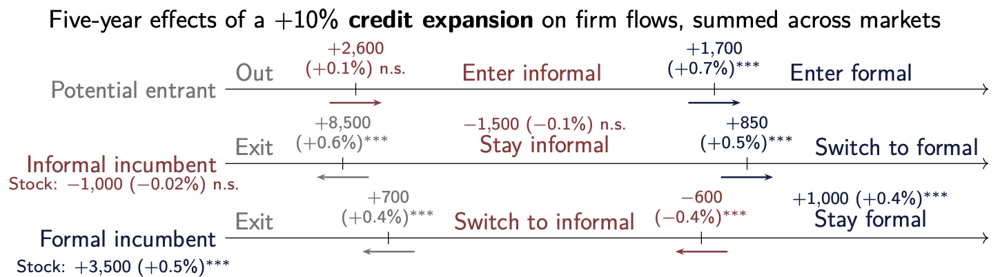
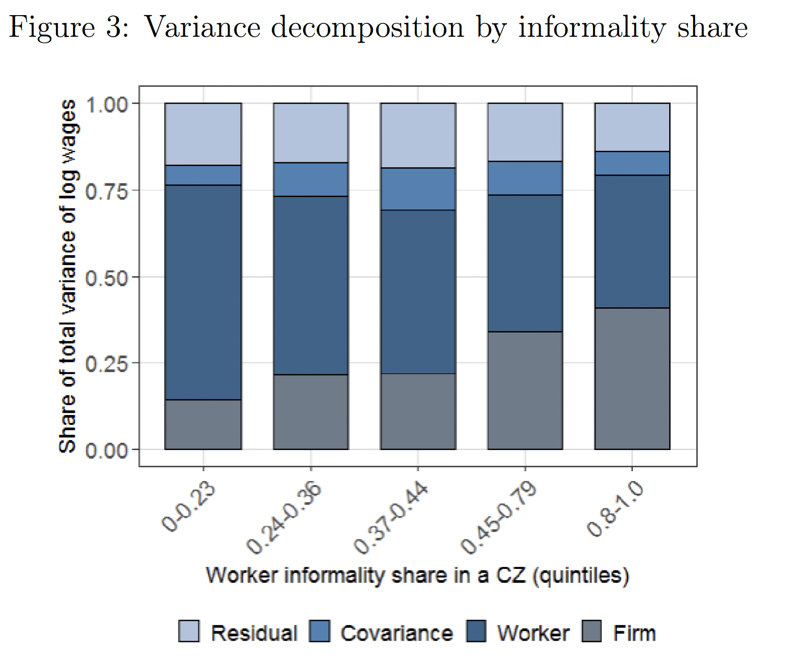

Job Market Paper
Formality as a Financing Decision
Joint with Daniela Puggioni
Abstract
Can bank loans make informal firms formalize? We match the universe of bank loans, the social security records, and the economic censuses in Mexico to track formality, loans, and firm transitions from 2005 to 2025. Three facts emerge. Three quarters of firms with a bank loan are informal; informal firms pay higher rates, provide more collateral on collateralized loans, and obtain smaller loans; and firms move between formality and informality in both directions. We develop a model in which firms that need a loan and are at the margin between being formal and being informal change their status when the relative terms or availability of loans change. Leveraging bank credit supply shocks, we find that a ten percent credit supply expansion widens the financial advantage of formal firms and, as the model predicts, raises the number of firms that formalize by 850 (0.5 percent) and lowers the number of firms that become informal by 600 (0.4 percent) per five-year window in our sample markets. We demonstrate that bank loans affect not only formal firms but also informal ones, and are a lever for formalization.


Presented at: Yinghua He Empirical Micro Workshop, Macro Workshop and BID Workshop (TSE); ENTER Jamboree (SSE); Development Breakfast and Labor Breakfast (Yale); PhD Workshop (Nova SBE, Lisbon). Upcoming: Brown Bag (SSE) and CEPR Paris Symposium.
Working Papers
Why Are Firm Effects More Dispersed in Developing Countries? Evidence from Mexico
Joint with Matteo Bobba, Tim Ederer, Luca Flabbi, and Daniela Puggioni
Abstract
A large literature that decomposes wage inequality into worker and firm components finds that firm effects explain a larger share of wage dispersion in developing countries than in advanced economies. This paper argues that the informal sector explains it. Using the economic census and matched employer-employee data from Mexico's manufacturing sector, we estimate AKM two-way fixed effects models and show that labor markets with more informality have firm effects that are more dispersed, explain a larger share of wage variance, and are lower on average. This evidence motivates a labor market model with imperfect competition, compensating differentials, and informality. This framework allows us to decompose the estimated AKM firm effects into productivity pass-through, amenities, and market power. The estimation is ongoing and will allow us to quantify how much of the dispersion in firm effects reflects informality.


Presented at: Econometrics and Empirical Economics retreat (TSE)
Work in Progress
Credit, Informality, and Aggregate Outcomes
Abstract
This project extends my job market paper. First, I extend the model to a general equilibrium framework in which firms compete in the labor market. Second, I estimate it as a dynamic discrete choice problem in which firms choose between exit, formality, and informality. The estimation will allow me to evaluate counterfactual policies such as credit guarantees or financial inclusion programs and compare their effects with those of tax policy changes on formality, output, and productivity.
How Firm Shocks Reach Workers
Abstract
This work studies the pass-through of firm shocks to wages and employment and its interaction with informality. I rely on the credit shocks as in my job market paper, but at monthly frequency, and I include only loans used for productive purposes such as capital investment, excluding all other types of loans. To analyze the effects of these shocks at the firm level, not at the market level, I match the financial shocks with a pool of more than 2.4 million companies. The estimation measures how much of the credit shock actually translates into a labor productivity shock and traces its effects on firms’ growth, capital investment, and profits. Then I estimate the effects of labor productivity changes, instrumented by the credit supply shocks, on labor and wages. Furthermore, I analyze how the pass-through differs by formality and by regional institutional settings like the minimum wage and taxes.
Who Bears the Cost of Domestic Sovereign Borrowing?
Abstract
The share of government debt held by domestic banks has increased in emerging economies in a context of fiscal pressures such as fuel subsidies, pension systems, and state-owned enterprises’ financial back-up. It is well documented that government borrowing can crowd out financing to the private sector. This work measures the degree of crowding-out and assesses its effects across the firm size distribution and the firms’ formality status. Using banks’ holdings of government securities and the universe of bank loans to enterprises, I compare multi-bank firms connected to banks exposed to different levels of government securities. Furthermore, I explore the feedback effects of the crowding-out, where the government borrows from banks, firms face a credit drought and perform poorly, fiscal revenues fall as a consequence, and the government must borrow even more from banks.